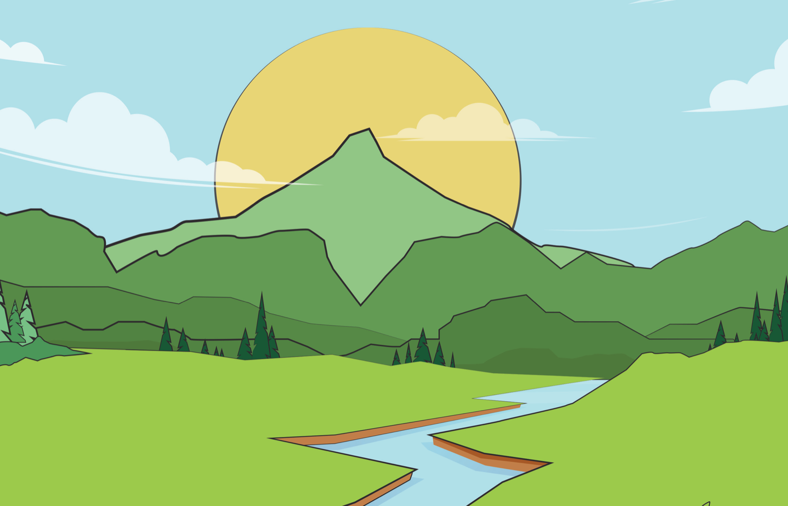

Resurset dhe trashëgimia e vendit tim
Shfrytëzimi i arsyeshëm i pasurive natyrore
Fjalët kyçe: pasuri natyrore, të paripërtëritshme, të ripërtëritshme, diell, ujë, ajër, lëndë djegëse.

Resurset dhe trashëgimia e vendit tim
Fjalët kyçe: pasuri natyrore, të paripërtëritshme, të ripërtëritshme, diell, ujë, ajër, lëndë djegëse.
